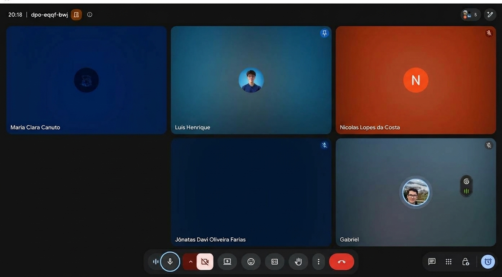
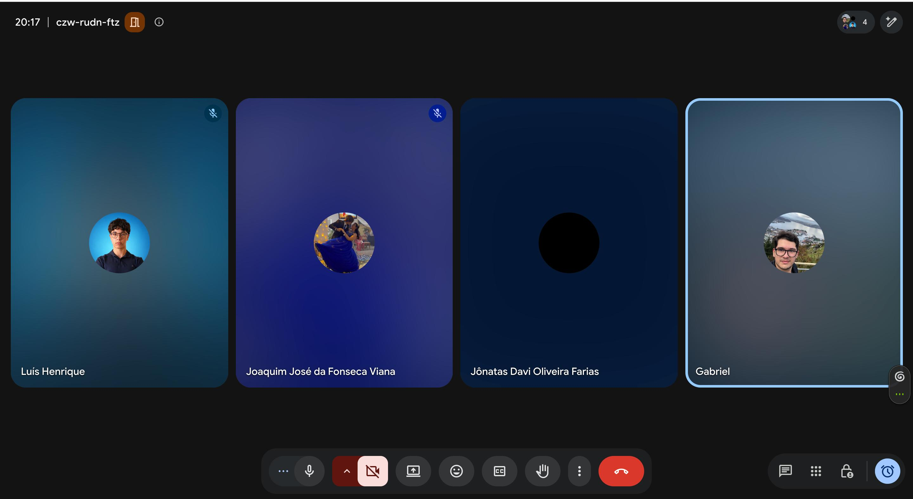

Reuniões da Unidade 3#
Esta página reúne os registros das reuniões realizadas durante a Unidade 3 para planejamento, acompanhamento, verificação e validação das features construídas no projeto Clínica Escola FBr.
Reunião de planejamento do Ciclo 3: issues, DoR e estrutura do projeto#
Data: 15/10/2026 Local: Reunião on-line (Google Meet) Participantes: Gabriel da Cunha Barbaceli; Jônatas Davi Oliveira Farias; Luís Henrique; Maria Clara Canuto; Nicolas Lopes da Costa.

Figura 14 — Registro da reunião de planejamento do Ciclo 3: issues, DoR e estrutura do projeto, realizada em 15/10/2026.
Resumo#
A reunião teve como objetivo organizar as atividades iniciais do Ciclo 3, alinhar o planejamento das issues e do DoR e preparar a estrutura do projeto para a Unidade 3.
1. Planejamento do Ciclo 3#
- A divisão das atividades de construção do Ciclo 3 será compartilhada no grupo da equipe.
- O planejamento deve considerar as issues que o professor publicar no GitHub, identificando itens urgentes e dependências para as etapas seguintes.
- A distribuição definitiva das features e a confirmação do cronograma da semana seguinte ficaram pendentes até a publicação e a análise dessas issues.
2. Issues e estrutura do projeto#
- Os modelos de issue já estão criados para features, bugs, tarefas técnicas e documentação.
- Os itens do Backlog de Produto devem ser convertidos em issues no GitHub.
- A estrutura da Unidade 3 deve incluir a organização das pastas e dos arquivos necessários ao trabalho.
3. Definition of Ready (DoR)#
- Neste primeiro ciclo, cada integrante fica responsável por levantar o DoR da feature em que vai trabalhar.
- Para os ciclos seguintes, foi sugerido antecipar o levantamento do DoR para o ciclo anterior, evitando atrasos no início do desenvolvimento. A divisão dessa atividade entre duas pessoas ainda não foi definida.
4. Base técnica e revisão#
- A branch com o esqueleto técnico do projeto está pronta, como rascunho. A revisão e a aprovação para o merge na branch principal ocorrem após a liberação das issues pelo professor.
- Foi proposta a revisão por dois integrantes, com oportunidade para que todo o grupo examine a estrutura e registre dúvidas no canal de comunicação da equipe.
- Gabriel avisará Joaquim sobre a liberação da permissão de administrador do repositório.
5. Próximos passos e responsabilidades#
- Todos os integrantes: analisar as issues assim que forem publicadas e levantar o DoR das próprias features neste primeiro ciclo.
- Gabriel: compartilhar a divisão de atividades do Ciclo 3, avisar Joaquim sobre a permissão de administrador e ajustar o cronograma se houver itens urgentes.
- Equipe: converter os itens do backlog em issues e revisar a branch técnica após a liberação das issues pelo professor, com dois revisores a confirmar.
Encerramento#
O planejamento detalhado do Ciclo 3 depende da publicação das issues pelo professor. Os modelos de issue e a branch técnica estão preparados; após a análise das issues, a equipe define a distribuição das tarefas, valida a base técnica e ajusta o cronograma conforme as prioridades identificadas.
Reunião de PRs, requisitos DoR e planejamento de implementação do Ciclo 3#
Data: 22/10/2026 Local: Reunião on-line (Google Meet) Participantes: Gabriel da Cunha Barbaceli; Jônatas Davi Oliveira Farias; Luís Henrique Luna; Joaquim José da Fonseca Viana.

Figura 15 — Registro da reunião de PRs, requisitos DoR e planejamento de implementação do Ciclo 3, realizada em 22/10/2026.
Resumo#
A reunião teve como objetivo alinhar a revisão das pull requests, a validação dos requisitos DoR e a organização da implementação do Ciclo 3.
1. Pull requests e dependências#
- Duas pull requests já revisadas foram aprovadas. Permanece aberta a PR de ajuste do Dependabot, com Jônatas como revisor: a atualização automática para TypeScript 7 causou incompatibilidades. O projeto permanecerá no TypeScript 5 até haver compatibilidade estável.
- Após a aprovação do ajuste, o Dependabot deverá recriar a PR de atualização. Se os problemas persistirem, será feita correção manual.
- A PR de Joaquim deve ser conferida em relação às issues recém-publicadas pelo professor. Após os ajustes necessários, será revisada e enviada novamente para aprovação.
2. Requisitos DoR e preparação do Ciclo 3#
- Cada responsável por feature deve revisar sua issue e marcar o requisito DoR 8.1, confirmando entendimento e capacidade de estimar e implementar a feature.
- O requisito 7.3, referente à validação do protótipo, deverá ser marcado após a reunião com a Clínica Escola FBr, prevista para 23/10.
- Na issue 97, falta confirmar com a FBr o modelo da ficha de anamnese e do contrato terapêutico. Os demais itens do DoR foram considerados prontos, sujeitos à resolução dessas pendências.
3. Implementação paralela e regras de trabalho#
- Gabriel preparará o esquema de banco de dados para as features do Ciclo 3, com previsão de conclusão na manhã de sábado, 24/10, permitindo o desenvolvimento em paralelo com dados mockados.
- Cada feature deverá ter uma branch própria. Alterações posteriores em tabelas devem ser feitas por novas migrations; mudanças em tabelas compartilhadas devem ser alinhadas entre os responsáveis envolvidos.
- Gabriel ficará responsável por integrar as implementações e testar o fluxo completo, com previsão para 27/10, se não houver imprevistos.
4. Ajustes nos requisitos e protótipo#
- Foi alinhado que a dependência entre os requisitos funcionais 1 e 2 pode permanecer marcada, pois ambos serão desenvolvidos no mesmo ciclo.
- Foi discutida a possibilidade de antecipar para o Ciclo 3 o termo de consentimento previsto para o Ciclo 4, por ser uma dependência do requisito funcional 1. Não houve decisão definitiva sobre essa antecipação.
- Há uma inconsistência entre o requisito funcional 1 e o protótipo quanto ao RG: o requisito prevê apenas os números, enquanto o protótipo solicita também órgão emissor e estado. Jônatas enviará a Gabriel uma lista dos pontos e justificativas para avaliação e possível ajuste do protótipo.
5. Revisões, reunião com a FBr e prazos#
- Luís e Joaquim devem revisar as issues antes de 25/10, se possível, para permitir correções antes da entrega. A implementação poderá ser concluída até a manhã de 27/10.
- Na reunião com a FBr prevista para 23/10, a equipe apresentará o andamento do projeto e o protótipo do Ciclo 3 para validação e buscará respostas às dúvidas urgentes, incluindo a definição sobre o domínio do sistema.
- Gabriel compartilhará o roteiro da reunião no grupo. Se não conseguir apresentar por estar no aeroporto ou precisar sair antes, Jônatas poderá dar continuidade.
- Quem encontrar dificuldades com prazo ou implementação deve avisar no grupo para que a equipe possa ajudar e evitar acúmulo de tarefas nos ciclos seguintes.
Encerramento#
Ficaram encaminhadas a revisão das PRs e issues, a conclusão das pendências do DoR e a preparação do banco de dados para desenvolvimento paralelo. O próximo passo é validar o protótipo e esclarecer dependências com a FBr em 23/10, avançando para a implementação e integração até 27/10.
Reunião de validação do protótipo do Ciclo 3 com a FBr#
Data: 23/10/2026 Horário: Iniciada às 14h26; retomada às 15h29 após instabilidade de conexão. Participantes: Gabriel da Cunha Barbaceli; Joaquim José da Fonseca Viana; Maria Clara Canuto; Thiago Viana; Robson; Nicolas Lopes da Costa.
Figura 16 — Registro da reunião de validação do protótipo do Ciclo 3 com a Clínica Escola FBr, realizada em 23/10/2026.
Objetivo#
Apresentar o andamento do projeto e o protótipo de alta fidelidade do Ciclo 3 à Clínica Escola FBr, validando as regras de negócio pendentes antes do início do desenvolvimento.
Contexto#
A equipe apresentou à FBr o protótipo de alta fidelidade das funcionalidades do Ciclo 3 — inscrição, triagem, distribuição de casos, vinculação de estagiário, agendamento e prontuário — para validação antes do início da implementação. Devido à instabilidade na conexão de Gabriel, Maria assumiu a apresentação de parte das telas.
1. Regras de negócio definidas#
- Prazo de pagamento: o paciente selecionado terá 10 dias para pagar e efetivar a vaga.
- Prioridade em caso de empate: considerar primeiro a gravidade clínica e, em seguida, a data de inscrição.
- Limite de casos: cada supervisor poderá acompanhar até 50 casos, limite ajustado para comportar o crescimento do número de estagiários. Para estagiários, não haverá limite fixo; a quantidade dependerá da disponibilidade.
- Duração da sessão: 50 minutos de atendimento, seguidos de 10 minutos para anotações.
- Cancelamento pelo paciente: permitido até 1 hora antes da sessão, com justificativa. O limite é de 2 cancelamentos ou faltas consecutivos.
- Lembrete de sessão: notificação automática enviada com até 24 horas de antecedência.
- Capacidade simultânea: estimativa de 30 usuários em horário de pico.
- Registro de evolução: campos obrigatórios para data, evolução da queixa (até 10 linhas) e planejamento. Deve haver fechamento avaliativo a cada 10 sessões.
- Canais de contato: WhatsApp e ligação telefônica. E-mail e SMS foram descartados devido ao baixo acesso tecnológico do público.
- Login: o acesso será bloqueado por 15 minutos após 3 tentativas incorretas, reduzidas de 5 para 3 por sugestão da coordenação de Psicologia.
- Especialidades: não haverá divisão por área; todos os atendimentos serão tratados como psicologia clínica geral. O conceito de área de especialidade será removido do cadastro, dos critérios de distribuição e dos itens de menu.
2. Validação do protótipo e ajustes#
Foram apresentadas e aprovadas pela FBr as telas de inscrição (desktop e mobile), erro de preenchimento, triagem, revisão e comprovante, login, ativação de conta, painel de usuários, listagem de triagem, atribuição de prioridade clínica, distribuição para supervisores, vinculação de estagiário, agendamento de sessão e prontuário. Foram acordados os seguintes ajustes:
- Remover campos, telas e opções de menu relacionados à área de especialidade, incluindo os pontos de triagem e distribuição.
- Manter apenas WhatsApp e ligação como canais de contato, removendo as demais opções.
- Manter os campos de anamnese e contrato terapêutico do prontuário como ilustrativos até o recebimento do material oficial da coordenação.
- Configurar a ativação da conta por link enviado pela coordenação, com validade de 72 horas.
3. Responsabilidades#
- Coordenação de Psicologia da FBr: enviar o modelo da ficha de anamnese, o modelo do contrato terapêutico e os arquivos de triagem.
- Gabriel: ajustar o protótipo conforme os pontos discutidos, incluindo a remoção da área de especialidade e a atualização dos canais de contato; gravar e enviar à FBr um vídeo demonstrativo do protótipo atualizado para aprovação ponto a ponto; integrar e testar as funcionalidades do Ciclo 3.
4. Prazos e próximos passos#
- 27/10/2026: funcionalidades do Ciclo 3 integradas e prontas para teste real pela FBr.
- 01/12/2026: site funcional internamente, com todas as funcionalidades testadas, ainda sem publicação.
- 07/12/2026: previsão de publicação do site no domínio da Clínica Escola FBr.
- 06/11/2026: próxima reunião com a FBr, na sexta-feira, no mesmo horário.
Encerramento#
O protótipo de alta fidelidade do Ciclo 3 foi validado pela FBr, com ajustes pontuais a aplicar antes do desenvolvimento. A coordenação de Psicologia enviará os modelos de anamnese e contrato terapêutico, além dos arquivos de triagem. Gabriel atualizará o protótipo, enviará um vídeo demonstrativo para aprovação final e dará sequência à implementação, com entrega das funcionalidades prevista para 27/10.